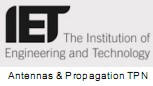

Visa Issues
China Visa Application
In order to visit China and attend the 2015 IF[IoT&A], overseas participants will be required to have valid visas. Obtaining a visa for entry into China is not difficult, but it is important to allow enough lead time (as much as several weeks) for processing your application.
For participants who require entry visa to enter China: Visa F is issued to an applicant who is invited to China on a visit, on a study or lecture, business tour, for scientific-technological and cultural exchanges, for short-term refresher course or for job-training, for a period of no more than six months.
You will need to go to the visa office of the Embassy or Consulate-General in the consular jurisdiction in which you live to submit the application.
Visa fees and processing times vary from country to country. Please check with the visa office for details. If your local travel agent has experience arranging travel to China, they can also help with getting your visa.
As part of the VISA application process, you may be required to submit an invitation letter from the organizing committee of the the 2015 IF[IoT&A]. Please send an email to the organising committee of the 2015 IF[IoT&A] at ifiota@whut.edu.cn.
Contact Us
Email: ifiota@whut.edu.cnTelephone: +86-027-87381195
Sponsors


